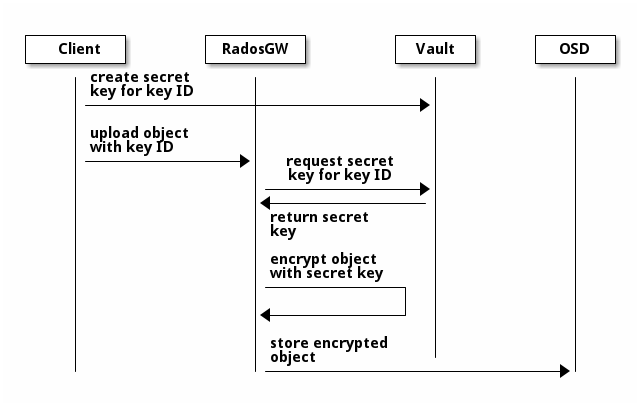

Notice
This document is for a development version of Ceph.
HashiCorp Vault Integration
HashiCorp Vault can be used as a secure key management service for Server-Side Encryption (SSE-KMS).

Some examples below use the Vault command line utility to interact with Vault. You may need to set the following environment variable with the correct address of your Vault server to use this utility:
export VAULT_ADDR='https://vault-server-fqdn:8200'
Vault Secrets Engines
Vault provides several secrets engines, which can store, generate, and encrypt data. Currently, the Object Gateway supports:
KV secrets engine version 2
KV Secrets Engine
The KV secrets engine is used to store arbitrary key/value secrets in Vault. To enable the KV engine version 2 in Vault, use the following command:
vault secrets enable -path secret kv-v2
The Object Gateway can be configured to use the KV engine version 2 with the following setting:
rgw crypt vault secret engine = kv
Transit Secrets Engine
The transit engine handles cryptographic functions on data in-transit. To enable it in Vault, use the following command:
vault secrets enable transit
The Object Gateway can be configured to use the transit engine with the following setting:
rgw crypt vault secret engine = transit
Vault Authentication
Vault supports several authentication mechanisms. Currently, the Object Gateway can be configured to authenticate to Vault using the Token authentication method or a Vault agent.
Most tokens in Vault have limited lifetimes and powers. The only sort of Vault token that does not have a lifetime are root tokens. For all other tokens, it is necessary to periodically refresh them, either by performing initial authentication, or by renewing the token. Ceph does not have any logic to perform either operation. The simplest best way to use Vault tokens with Ceph is to also run the Vault agent and have it refresh the token file. When the Vault agent is used in this mode, file system permissions can be used to restrict who has the use of tokens.
Instead of having Vault agent refresh a token file, it can be told to act as a proxy server. In this mode, Vault will add a token when necessary and add it to requests passed to it before forwarding them on to the real server. Vault agent will still handle token renewal just as it would when storing a token in the filesystem. In this mode, it is necessary to properly secure the network path RGW uses to reach the Vault agent, such as having the Vault agent listen only to localhost.
Token Policies for the Object Gateway
All Vault tokens have powers as specified by the polices attached to that token. Multiple policies may be associated with one token. You should only use the policies necessary for your configuration.
When using the KV secret engine with the Object Gateway:
vault policy write rgw-kv-policy -<<EOF
path "secret/data/*" {
capabilities = ["read"]
}
EOF
When using the transit secret engine with the Object Gateway:
vault policy write rgw-transit-policy -<<EOF
path "transit/keys/*" {
capabilities = [ "create", "update" ]
denied_parameters = {"exportable" = [], "allow_plaintext_backup" = [] }
}
path "transit/keys/*" {
capabilities = ["read", "delete"]
}
path "transit/keys/" {
capabilities = ["list"]
}
path "transit/keys/+/rotate" {
capabilities = [ "update" ]
}
path "transit/*" {
capabilities = [ "update" ]
}
EOF
If you had previously used an older version of Ceph with the transit secret engine, you might need the following policy:
vault policy write old-rgw-transit-policy -<<EOF
path "transit/export/encryption-key/*" {
capabilities = ["read"]
}
EOF
If you are using both SSE-KMS and SSE-S3, then you should point
each to separate containers. You could either use separate
Vault instances, or you could use either separately mounted
transit instances, or different branches under a common transit
point. If you are not using separate Vault instances, you can
use these to point SSE-KMS and SSE-S3 to separate containers:
rgw_crypt_vault_prefix
and/or
rgw_crypt_sse_s3_vault_prefix.
When granting Vault permissions to SSE-KMS bucket owners, you should
not give them permission to muck around with SSE-S3 keys;
only Ceph itself should be doing that.
Token Authentication
Note
Never use root tokens with Ceph in production environments.
The token authentication method expects a Vault token to be present in a plaintext file. The Object Gateway can be configured to use token authentication with the following settings:
rgw crypt vault auth = token
rgw crypt vault token file = /run/.rgw-vault-token
rgw crypt vault addr = https://vault-server-fqdn:8200
Adjust these settings to match your configuration. For security reasons, the token file must be readable by the Object Gateway only.
Vault Agent
The Vault agent is a client daemon that provides authentication to Vault and manages token renewal and caching. It typically runs on the same host as the Object Gateway. With a Vault agent, it is possible to use other Vault authentication mechanism such as AppRole, AWS, Certs, JWT, and Azure.
The Object Gateway can be configured to use a Vault agent with the following settings:
rgw crypt vault auth = agent
rgw crypt vault addr = http://127.0.0.1:8100
You might set up Vault agent as follows:
vault write auth/approle/role/rgw-ap \
token_policies=rgw-transit-policy,default \
token_max_ttl=60m
Change the policy here to match your configuration.
Get the role-id:
vault read auth/approle/role/rgw-ap/role-id -format=json | \
jq -r .data.role_id
Store the output in some file, such as /usr/local/etc/vault/.rgw-ap-role-id.
Get the secret-id:
vault read auth/approle/role/rgw-ap/role-id -format=json | \
jq -r .data.role_id
Store the output in some file, such as /usr/local/etc/vault/.rgw-ap-secret-id.
Create configuration for the Vault agent, such as:
pid_file = "/run/rgw-vault-agent-pid"
auto_auth {
method "AppRole" {
mount_path = "auth/approle"
config = {
role_id_file_path ="/usr/local/etc/vault/.rgw-ap-role-id"
secret_id_file_path ="/usr/local/etc/vault/.rgw-ap-secret-id"
remove_secret_id_file_after_reading ="false"
}
}
}
cache {
use_auto_auth_token = true
}
listener "tcp" {
address = "127.0.0.1:8100"
tls_disable = true
}
vault {
address = "https://vault-server-fqdn:8200"
}
Then use systemctl or another method of your choice to run a persistent daemon with the following arguments:
/usr/local/bin/vault agent -config=/usr/local/etc/vault/rgw-agent.hcl
Once the Vault agent is running, you should find it listening
to port 8100 on localhost, and you should be able to interact
with it using the vault command.
Vault Namespaces
In the Enterprise version, Vault supports the concept of namespaces, which allows centralized management for teams within an organization while ensuring that those teams operate within isolated environments known as tenants.
The Object Gateway can be configured to access Vault within a particular namespace using the following configuration setting:
rgw crypt vault namespace = tenant1
Create a Key in Vault
Note
Keys for server-side encryption must be 256-bit long and base-64 encoded.
Using the KV Engine
A key for server-side encryption can be created in the KV version 2 engine using the command line utility, as in the following example:
vault kv put secret/myproject/mybucketkey key=$(openssl rand -base64 32)
Sample output:
====== Metadata ======
Key Value
--- -----
created_time 2019-08-29T17:01:09.095824999Z
deletion_time n/a
destroyed false
version 1
Note that in the KV secrets engine, secrets are stored as key-value pairs, and
the Object Gateway expects the key name to be key, i.e. the secret must be in the
form key=<secret key>.
Using the Transit Engine
Keys created for use with the transit engine should no longer be marked exportable. They can be created with:
vault write -f transit/keys/mybucketkey
The command above creates a keyring, which contains a key of type
aes256-gcm96 by default. To verify that the key was correctly created, use
the following command:
vault read transit/keys/mybucketkey
Sample output:
Key Value
--- -----
derived false
exportable false
name mybucketkey
type aes256-gcm96
Configure the Ceph Object Gateway
Edit the Ceph configuration file to enable Vault as a KMS backend for server-side encryption:
rgw crypt s3 kms backend = vault
Choose the Vault authentication method, e.g.:
rgw crypt vault auth = token
rgw crypt vault token file = /run/.rgw-vault-token
rgw crypt vault addr = https://vault-server-fqdn:8200
Or:
rgw crypt vault auth = agent
rgw crypt vault addr = http://localhost:8100
Choose the secrets engine:
rgw crypt vault secret engine = kv
Or:
rgw crypt vault secret engine = transit
Optionally, set the Vault namespace where encryption keys will be fetched from:
rgw crypt vault namespace = tenant1
Finally, the URLs where the Object Gateway will retrieve encryption keys from Vault can be restricted by setting a path prefix. For instance, the Object Gateway can be restricted to fetch KV keys as follows:
rgw crypt vault prefix = /v1/secret/data
Or, when using the transit secret engine:
rgw crypt vault prefix = /v1/transit
In the example above, the Object Gateway would only fetch transit encryption keys under
https://vault-server:8200/v1/transit.
You can use custom SSL certificates to authenticate with Vault with help of following options:
rgw crypt vault verify ssl = true
rgw crypt vault ssl cacert = /etc/ceph/vault.ca
rgw crypt vault ssl clientcert = /etc/ceph/vault.crt
rgw crypt vault ssl clientkey = /etc/ceph/vault.key
where vault.ca is CA certificate and vault.key/vault.crt are private key and SSL
certificate generated for RGW to access the Vault server. It is highly recommended to
set this option to the value true, setting false is very dangerous and needs to be avoided since this
runs in very secured environments.
Transit Engine Compatibility Support
The transit engine has compatibility support for previous versions of Ceph, which used the transit engine as a simple key store.
There is a compat option which can be given to the transit
engine to configure the compatibility support,
To entirely disable backwards support, use:
rgw crypt vault secret engine = transit compat=0
This will be the default in future versions. and is safe to use for new installs using the current version.
This is the normal default with the current version:
rgw crypt vault secret engine = transit compat=1
This enables the new engine for newly created objects, but still allows the old engine to be used for old objects. In order to access old and new objects, the Vault token given to Ceph must have both the old and new transit policies.
To force use of only the old engine, use:
rgw crypt vault secret engine = transit compat=2
This mode is automatically selected if the Vault prefix
ends in export/encryption-key, which was the previously
documented setting.
Upload Object
When uploading an object to the Object Gateway, provide the SSE key ID in the request. As an example, for the KV engine, using the AWS command-line client:
aws --endpoint=http://radosgw:8000 s3 cp plaintext.txt s3://mybucket/encrypted.txt --sse=aws:kms --sse-kms-key-id myproject/mybucketkey
As an example, for the transit engine (new flavor), using the AWS command-line client:
aws --endpoint=http://radosgw:8000 s3 cp plaintext.txt s3://mybucket/encrypted.txt --sse=aws:kms --sse-kms-key-id mybucketkey
The Object Gateway will fetch the key from Vault, encrypt the object and store it in the bucket. Any request to download the object will make the Object Gateway automatically retrieve the correspondent key from Vault and decrypt the object.
Note that the secret will be fetched from Vault using a URL constructed by
concatenating the base address (rgw crypt vault addr), the (optional)
URL prefix (rgw crypt vault prefix), and finally the key ID.
In the KV engine example above, the Object Gateway would fetch the secret from:
http://vaultserver:8200/v1/secret/data/myproject/mybucketkey
In the transit engine example above, the Object Gateway would encrypt the secret using this key:
http://vaultserver:8200/v1/transit/mybucketkey
Brought to you by the Ceph Foundation
The Ceph Documentation is a community resource funded and hosted by the non-profit Ceph Foundation. If you would like to support this and our other efforts, please consider joining now.